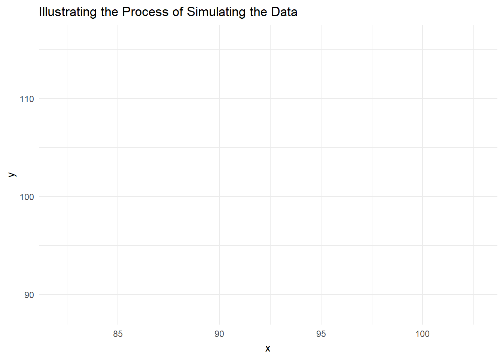

Demonstration of Clustered Data
Code
library(lme4) # MLM
library(ggplot2) # beautiful graphs
library(gganimate) # animated ggplots
library(plotly) # animated graphs
# library(broom)
library(pander) # nice tables
library(sjPlot) # nice tables for MLM1 Grouped and Individual Data
“The data were generated from random numbers, and there is no relation between X and Y at all. Firstly, values of X and Y were generated for each ‘subject,’ then a further random number was added to make the individual observation.”
From Bland and Altman, BMJ, 1994, 308, 896.
So… we follow their procedure.
Code
set.seed(3846) # random seed
g <- seq(1, 5) # number of groups
x <- rnorm(5, 100, 10) # group x
y <- rnorm(5, 100, 10) # group y
# 5 obs / group
id <- seq(1, 25)
group_num <- rep(g, 1, each=5)
x_group <- rep(x, each = 5) # x for the group
y_group <- rep(y, each = 5) # y for the group
x_noise <- rnorm(25, 0, 1) # random noise
y_noise <- rnorm(25, 0, 1) # random noise
x_individual <- x_group + x_noise # individual = group + noise
y_individual <- y_group + y_noise # individual = group + noise
mydata <- data.frame(id,
group_num,
x_group,
y_group,
x_individual,
y_individual)The animation below illustrates the process of simulating the data.
Code
ggplot(mydata,
aes(color = factor(group_num),
label = group_num)) +
geom_point(aes(x = x_group,
y = y_group),
size = 10,
show.legend = FALSE) +
geom_text(aes(x = x_group,
y = y_group),
color = "white",
show.legend = FALSE) +
geom_point(aes(x = x_individual,
y = y_individual),
show.legend = FALSE) +
transition_layers(layer_length = 1,
transition_length = 7) +
enter_fade() +
enter_grow() +
exit_fade() +
exit_shrink() +
labs(title = "Illustrating the Process of Simulating the Data",
x = "x",
y = "y") +
theme_minimal() +
scale_color_viridis_d(name = "group")
2 Analyses
2.1 OLS
Code
myOLS <- lm(y_individual ~ x_individual, data = mydata)
# summary(myOLS)
sjPlot::tab_model(myOLS,
show.se = TRUE,
show.ci = FALSE,
show.stat = TRUE)| y_individual | ||||
| Predictors | Estimates | std. Error | Statistic | p |
| (Intercept) | 4.49 | 12.44 | 0.36 | 0.722 |
| x individual | 1.05 | 0.14 | 7.75 | <0.001 |
| Observations | 25 | |||
| R2 / R2 adjusted | 0.723 / 0.711 | |||
Code
# pander(tidy(myOLS))2.2 MLM
Code
myMLM <- lmer(y_individual ~ x_individual + (1 | group_num),
data = mydata)
# summary(myMLM)
sjPlot::tab_model(myMLM,
show.se = TRUE,
show.ci = FALSE,
show.stat = TRUE)| y_individual | ||||
|---|---|---|---|---|
| Predictors | Estimates | std. Error | Statistic | p |
| (Intercept) | 98.71 | 15.74 | 6.27 | <0.001 |
| x individual | 0.02 | 0.16 | 0.12 | 0.903 |
| Random Effects | ||||
| σ2 | 0.62 | |||
| τ00 group_num | 97.39 | |||
| ICC | 0.99 | |||
| N group_num | 5 | |||
| Observations | 25 | |||
| Marginal R2 / Conditional R2 | 0.000 / 0.994 | |||
Code
# pander(tidy(myMLM))2.3 Compare OLS and MLM
Code
tab_model(myOLS, myMLM,
dv.labels = c("OLS", "MLM"),
show.se = TRUE,
show.ci = FALSE,
show.stat = TRUE)| OLS | MLM | |||||||
|---|---|---|---|---|---|---|---|---|
| Predictors | Estimates | std. Error | Statistic | p | Estimates | std. Error | Statistic | p |
| (Intercept) | 4.49 | 12.44 | 0.36 | 0.722 | 98.71 | 15.74 | 6.27 | <0.001 |
| x individual | 1.05 | 0.14 | 7.75 | <0.001 | 0.02 | 0.16 | 0.12 | 0.903 |
| Random Effects | ||||||||
| σ2 | 0.62 | |||||||
| τ00 | 97.39 group_num | |||||||
| ICC | 0.99 | |||||||
| N | 5 group_num | |||||||
| Observations | 25 | 25 | ||||||
| R2 / R2 adjusted | 0.723 / 0.711 | 0.000 / 0.994 | ||||||